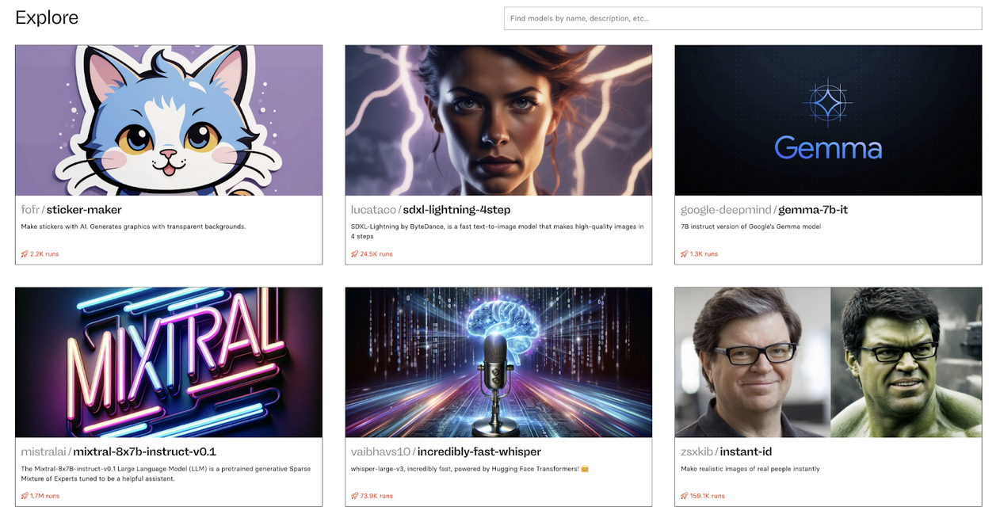

Tl;dr
With the advent of Generative AI, more people than ever (technical and non-technical) can build interesting, fun, and productivity-increasing AI apps and workflows. There are several challenges:
- Lots of people aren’t aware of what current tools are capable of and what tools are available;
- People don’t know how to combine such tools to build apps and workflows;
- People aren’t quite aware of the necessary generative AI mindset to do so.
In this blog post, we lay out many of the current capabilities of genAI tools, suggest ways to combine them, and spell out the genAI mindset of combining atomic units. In addition, we propose a simple protocol for building such apps and workflows:
- Identify a basic MVP of what you want to build;
- Break it down into atomic units;
- Decide on a tool for each atomic unit;
- Stitch them together!
Whether it’s YouTube video summarization, generating images with captions, building workflow automation tools, generating email templates, or writing short stories accompanied by images, we hope that people can use this protocol to build apps and workflows that help them at work and in their daily lives.
The GenAI mindset: combining atomic units
We recently released an episode of Vanishing Gradients about accessibility in generative AI. Both Johno and Hugo are particularly excited about how all the new tooling allows non-technical people to use machine learning and AI models through the ability to interact with them using natural language.
There are also new elements of how we even think about working with such tools. Consider the different mindsets of how we build machine learning, deep learning, and AI models:
- ML mindset: how can I generate useful features for prediction?
- DL mindset: how can I express what I want in terms of some loss function to optimize?
- GenAI mindset: how can I build applications using atomic generative AI units?
For an example of the latter, consider a task Hugo does a lot of in his day job: summarizing YouTube videos (see here and here, for examples). To do this, you can break the task down into atomic units:
- Speech-to-text: to get a transcript of the video;
- Text-to-text: to summarize the transcript.
Now anybody with differing levels of technical and hacker prowess can do this:
- If you’re into writing Python code, accessing cloud compute, and playing around with foundation models, you could use OpenAI’s OSS speech-to-text Whisper model and then any number of OSS LLMs for summarization, e.g. Llama2 or Mixtral;
- If you don’t want to write any code, you could use products such as Otter.ai or Descript to get the transcription and then use Claude or ChatGPT for the summarization;
- If you’re lazy like Hugo, you may have discovered that some legend has built a Chrome plugin called Glasp that essentially does this for you: Glasp performs the speech-to-text and pipes the result into Claude or ChatGPT, which then performs the text-to-text summarization.
What’s currently possible with GenAI
We have a public awareness issue: many people don’t even know what’s currently possible and what the atomic units are! For example, you can speak to chatGPT and have it create images, which combines speech-to-text and text-to-image. So what type of models are there?
- Text-to-text, such as ChatGPT, Claude, and so many open-source options;
- Text-to-speech and speech-to-text, such as Whisper, Otter.ai, and Descript;
- Text-to-image, such as Stable Diffusion, Midjourney, Pika Labs, Runway ml, and DALL·E 3;
- Image-to-image, such as Runway ml;
- Text-to-video, such as Stable Video Diffusion, Runway ml, and Sora;
- Image-to-video, such as Stable Video Diffusion and Runway ml;
- Text-to-music, such as Suno AI.
Hugo generated this list using ChatGPT and you can see the full conversation for other ideas here. It’s worth mentioning that the examples above sun the gamut from free to paid to open source, so feel free to jump in and play around with all types of models. Also note that some of these types of models are fairly obvious and single-use (text-to-speech or image) while others are a lot more configurable (e.g., LLMs can be used for semi-arbitrary text transformations, such as summarization, conversation, and more).
An example of combining atomic AI units
In their conversation, Johno gives a nice example: he wants to programmatically pull an image from the internet, then use a vision and text model to generate a silly quote to add to it:
- Get image: He first asked ChatGPT how he could use Python to pull a random high-quality photo from Unsplash – ChatGPT gave him some code and instructions, which worked;
- Get quote: He used OpenAI’s docs and quickstart examples to get an image-to-text model to generate a quote;
- Combine quote and image: He asked ChatGPT to give him Python code to do this and it delivered!
Note that Steps 1 and 3 don’t actually require any AI models but Johno cleverly used ChatGPT to give him the code for these steps.
So why are we telling you all of this? Well, we want to encourage everyone to experiment with all of these burgeoning tools, both for productivity and for pleasure!
How to get started building your own GenAI apps and workflows
The protocol we suggest is as follows:
- Identify a basic MVP of what you want to build (e.g. YouTube video summarization, generating images with captions, building workflow automation tools, generating email templates, or writing short stories accompanied by images);
- Break it down into atomic units;
- Decide on a tool for each atomic unit;
- Stitch them together!
We also strongly encourage you to speak with an AI assistant such as ChatGPT or Claude about any of these steps also, even merely to ideate about Step 1!
We now suggest a few ways to get started with this process, for those who don’t code, for those who, and for those who want to chat with an AI to get some inspiration :)
Explore what’s possible without code on Replicate
Go to Replicate’s explore page and, well, explore! Hugo is just looking now and it’s all so much fun:

You have a sticker maker, high-quality image generator, a way to play with Google’s Gemma model, a Mixtral assistant, a fast Whisper model, and an image-to-image model which, once you click through, shows you how to turn this image
Into this!
Explore what’s possible with code
Do the same but explore HuggingFace models and HuggingFace spaces. Something you can do here is look at the code for existing spaces for inspiration - in many cases you can copy-paste (or git clone the whole space) to get a working starting point. Many of them also have Gradio demos you can play around with immediately!
Chat with ChatGPT or Claude about what’s possible
Seriously. You saw above how Johno chatted with ChatGPT to achieve a basic task. Have a chat with an LLM about how to do things you’d like to. If you can’t think of anything, ask it to help you think of something! You can even ask it to ask you about your interests and to help you think about what you could build.
Hugo actually just played around with ChatGPT to do something along these lines and ended up writing a story and generating an image to accompany it with ChatGPT. You can check out the conversation here, if you’d like, and the resulting notebook here :)
There are a few things to note about the conversation Hugo had with ChatGPT here:
- Hugo made some slight prompting errors by not being specific enough such as writing “yes lets go through it step by step please” instead of “let’s start with step 1 now”;
- Several models ChatGPT suggested didn’t end up working! Hugo had to probe ChatGPT in order to get the correct code: this is common! Just like conversations with people, it’s not uncommon to have to ask several times (to have a conversation) to get the information you’re really looking for;
- Hugo likes writing code in Jupyter notebooks so suggested to ChatGPT that they use notebooks and Python code: feel free to suggest what makes you most comfortable (but also try to push yourself!).
To the final point, a large part of the podcast conversation is about how people who don’t write code can leverage GenAI models these days. Having said that, we encourage people who don’t code to learn a little, if the feel like it, and LLMs make it easier than ever to do so.
Jensen Huang, CEO of Nvidia, “argues that we should stop saying kids should learn to code. He argues the rise of AI means we can replace programming languages with human language prompts thus enabling everyone to be a programmer.”
Jensen Huang, CEO of Nvidia, argues that we should stop saying kids should learn to code.
— Dare Obasanjo🐀 (@Carnage4Life) February 24, 2024
He argues the rise of AI means we can replace programming languages with human language prompts thus enabling everyone to be a programmer.
AI will kill coding.pic.twitter.com/SxK9twhEby
We don’t necessarily agree with this characterization. Not everybody needs to be a software engineer but learning a bit of coding pays serious dividends and likely will in the future, even just to stitch atomic GenAI units together.
Tell us what you did
We’d be excited to hear from you about what you were able to build or even just play around with! Feel free to ping Hugo on Twitter @hugobowne to let him know :)